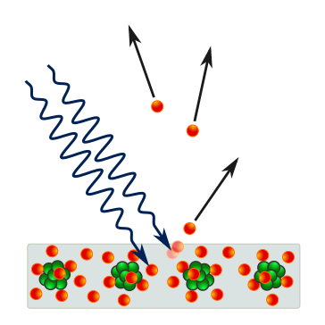

Albert Einstein was born at Ulm, in Württemberg, Germany, on March 14, 1879. Six weeks later the family moved to Munich, where he later on began his schooling at the Luitpold Gymnasium. Later, they moved to Italy and Albert continued his education at Aarau, Switzerland and in 1896 he entered the Swiss Federal Polytechnic School in Zurich to be trained as a teacher in physics and mathematics. In 1901, the year he gained his diploma, he acquired Swiss citizenship and, as he was unable to find a teaching post, he accepted a position as technical assistant in the Swiss Patent Office. In 1905 he obtained his doctor’s degree.
"HISTORY"

In a 1905 paper,Einstein postulated that light itself consists of localized particles.Einstein's light quanta were nearly universally rejected by all physicists, including Max Planck and Niels Bohr. This idea only became universally accepted in 1919, with Robert Millikan's detailed experiments on the photoelectric effect, and with the measurement of Compton scattering.